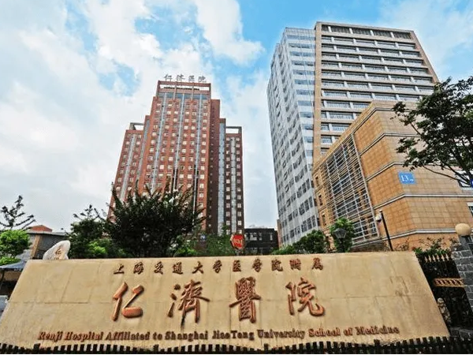
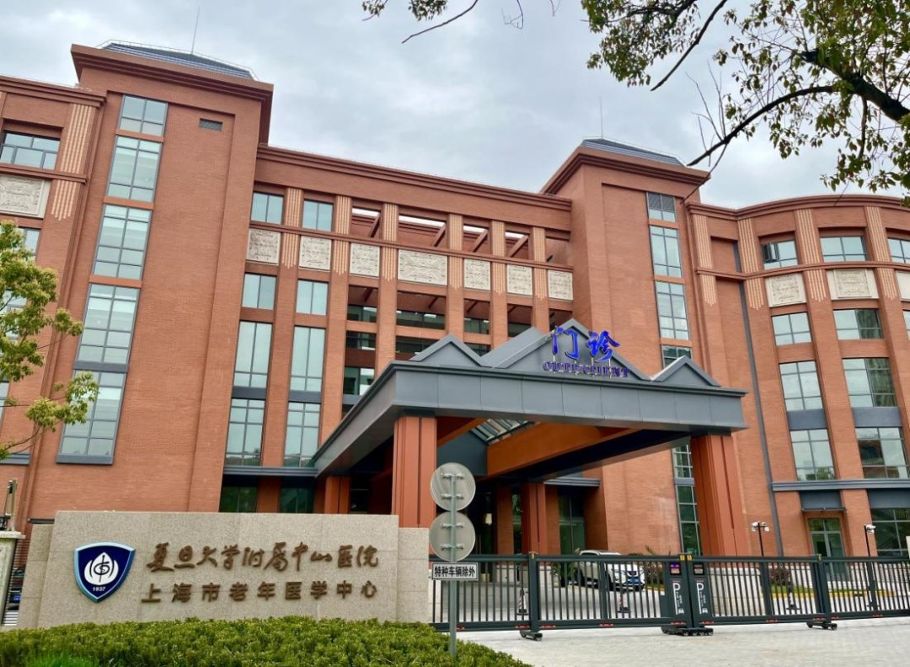
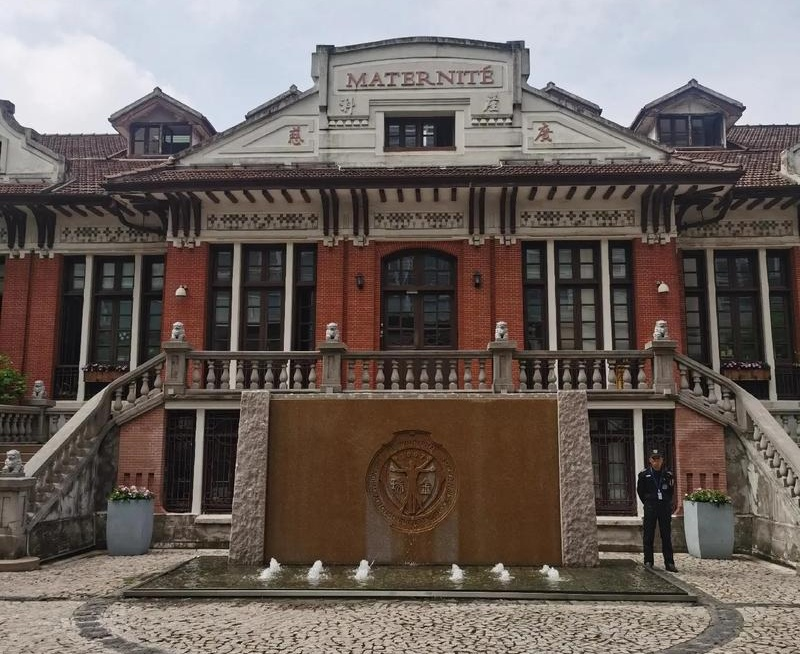
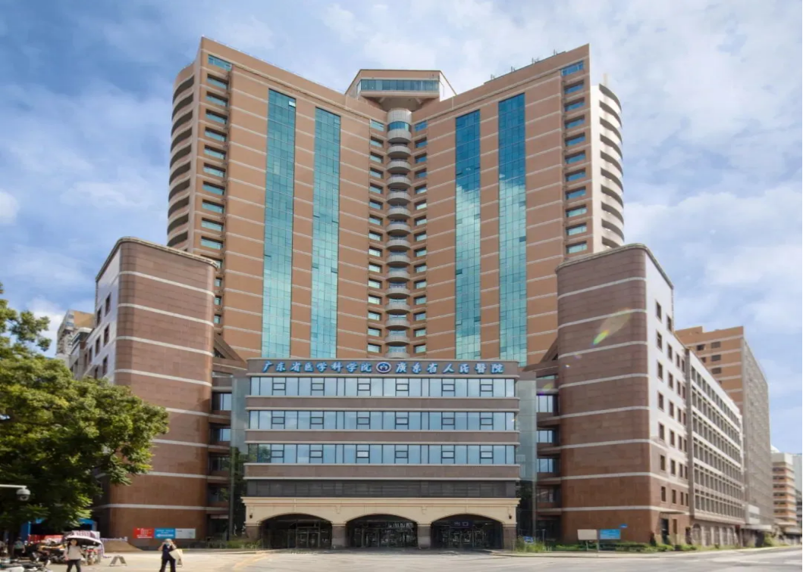
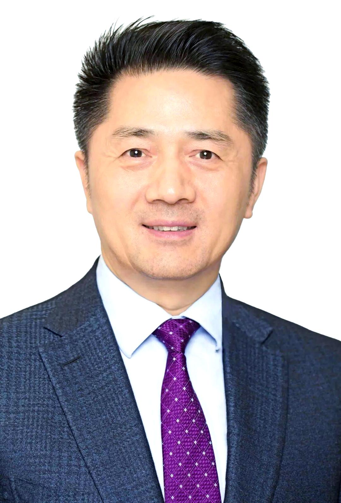

病例整理
整理并翻译病历资料，形成医院可快速评估的双语文件包。
为什么选择 AetherMed
中国医疗在多个专科领域具备成熟技术、响应效率和相对可负担的费用优势。AetherMed 帮助国际访客跨越语言障碍、不同病历格式、医院选择、预约规则、签证、支付、住宿和治疗后随访等复杂环节，并由专属个案经理统一协调医院、医生、翻译、行程与家属沟通。
专科方向
我们根据病情、就医目标和预算，协助匹配适合的医院、科室和医生，并在需要时协调远程诊疗、来华治疗与后续随访。
预防与内科管理
专科与手术方向
康复与中医康养
全周期服务
整理并翻译病历资料，形成医院可快速评估的双语文件包。
按病情和预算匹配合适的医院和医生，并实现双向选择。
协调线上专家意见，帮助出发前了解方案、风险和周期。
协助签证材料、住宿、交通和抵达后的行程安排。
陪同挂号、检查、缴费、住院沟通和医生查房翻译。
整理出院资料、复查计划和远程随访，衔接本地医生。
医院与医生
AetherMed 根据病情、城市、预算、语言需求和医院接诊政策，协助国际访客筛选医院路径，并匹配适合的专科医生方向。

公立三甲综合医院
上海历史悠久的综合性医院之一，在消化、肝胆胰、泌尿、肿瘤及复杂多学科会诊方面具备成熟资源。

公立三甲综合医院
复旦大学附属中山医院是上海大型综合医院，心血管、肝肿瘤、消化、普外和重症医学等方向资源突出。

公立三甲综合医院
瑞金医院是上海重要综合性医院，在内分泌代谢、血液、消化、感染与疑难复杂疾病综合管理方面经验丰富。
公立三甲综合医院
西北地区重点综合医院之一，在肝胆外科、消化、肿瘤以及心内、心外等复杂专科诊疗方面具备较强能力。

公立三甲综合医院
华南地区重要综合医疗中心，在神经、心脏和肺部相关疾病诊疗方面具备突出资源，适合复杂病例评估与跨科协作。
上海仁济医院
肝移植、儿童肝移植、肝胆外科
适合需要肝移植可行性评估、复杂肝胆疾病意见或儿童肝病治疗路径讨论的国际患者。

上海中山医院
肝癌外科、肝脏肿瘤综合治疗、MDT评估
适合肝脏肿瘤、肝癌手术方案、综合治疗路径和二诊评估需求。
西安交通大学第一附属医院
胃肠道肿瘤、机器人与腹腔镜微创手术
擅长胃癌、结直肠癌等胃肠道肿瘤的微创根治手术，专注于机器人和腹腔镜微创治疗路径评估。
西安交通大学第一附属医院
胃肠道肿瘤、微创根治手术、复发再手术
擅长胃癌、结直肠癌等胃肠道肿瘤微创根治手术，以及胃肠道肿瘤复发后的再手术评估。
西安交通大学第一附属医院
慢性肝病、自身免疫性肝病、门静脉高压症
主治慢性肝病、自身免疫性肝病（PBC、AIH、PSC）、肝硬化及非硬化性门静脉高压症（HSOS、PSVD）。
服务流程
Contact us and share diagnosis, test results, imaging, and treatment records so we can understand your goals and language needs.
用户最看重的支持
“从资料整理到医生匹配，每一步都有人解释清楚。我们知道接下来要准备什么，也知道预计时间和费用范围。”
“抵达上海后，接机、入住和第一次医院就诊都安排得很顺。现场翻译让我们和医生沟通时安心很多。”
“回国前收到整理好的中英文文件和账单，后续也能继续问问题，和本地医生交接更顺利。”
免费评估
简要描述您的情况，分享可用资料和其他相关信息，我们将免费评估中国医疗是否适合您，并建议下一步。